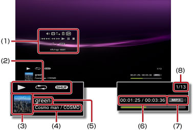

Musique > Utilisation du panneau de configuration
Utilisation du panneau de configuration
Pour effectuer diverses opérations à l'aide du panneau de configuration à l'écran. Le panneau de configuration peut être affiché ou masqué en appuyant sur la touche  .
.
Contrôle du volume

Réglez le niveau de sortie du volume du contenu lu sous  (Musique). Vous avez le choix entre neuf niveaux.
(Musique). Vous avez le choix entre neuf niveaux.
Conseil
Le son risque d'être déformé si le niveau de volume est trop élevé. Dans ce cas, réduisez le niveau de volume.
Visualiseur
Sélectionnez plusieurs fonds d’écran à afficher durant la lecture du contenu.
Conseil
Vous ne pouvez pas modifier les fonds d’écran du Visualiseur lorsque du contenu  (Photo) ou
(Photo) ou  (Navigateur Internet) est affiché.
(Navigateur Internet) est affiché.
Ajouter à la liste de lecture
Pour ajouter le contenu en cours de lecture à une liste de lecture.
Conseil
Seuls les fichiers musicaux enregistrés sur votre disque dur peuvent être ajoutés à une liste de lecture.
Supprimer
Pour supprimer le contenu en cours de lecture.
Conseil
Seuls les fichiers musicaux enregistrés sur votre disque dur peuvent être supprimés.
Affichage
Pour afficher l'état et d'autres informations durant la lecture. Les éléments d'informations varient en fonction du contenu lu.

(1) |
Panneau de configuration |
|---|---|
(2) |
Icône d'état |
(3) |
Icône de la piste |
(4) |
Nom de l'artiste / nom de l'album |
(5) |
Nom de la piste |
(6) |
Numéro de piste / nombre total de pistes |
(7) |
Codec |
(8) |
Durée écoulée / durée totale de la piste |
Précédent
Pour revenir au début de la piste actuelle ou à la piste précédente.
Suivant
Pour accéder au début de la piste suivante.
Retour rapide / Avance rapide
Pour faire avancer ou reculer rapidement le contenu lu. Si vous maintenez enfoncée la touche  , le contenu est avancé ou reculé rapidement tant que vous maintenez la touche enfoncée.
, le contenu est avancé ou reculé rapidement tant que vous maintenez la touche enfoncée.
Lire
Pour démarrer la lecture du contenu.
Pause
Pour interrompre temporairement la lecture.
Arrêter
Pour mettre fin à la lecture.
Répétition
Pour lire le contenu à plusieurs reprises. Vous pouvez sélectionner un des trois modes de répétition en appuyant sur la touche .
 |
Pour lire à plusieurs reprises un élément du contenu. |
|---|---|
|
Pour lire tout le contenu à plusieurs reprises. |
| Aucun affichage | Pour annuler la lecture répétée et lire tout le contenu dans l'ordre. |
Lecture aléatoire
Pour lire le contenu dans un ordre aléatoire.